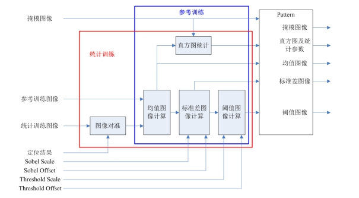
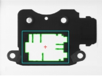

PatternInspect工具作为一种高性能的图像比对工具，能够高效的产生实时图像与模板图像之间的差值图像，是缺陷检测中非常重要的一个环节。
图一是一种典型检测案例其中：(a)为训练原图；(b)为训练原图经过旋转，并加上3个缺陷区域；©为检测结果；可以看到该工具能够很好的将产品中的差异检测出来。
| 分类 | 参数名称 | 参数描述 |
|---|---|---|
| 属性窗口 | 检测区域 | 需要进行差异检测的区域。 |
| 规定化模式 | PatternInspect工具对图像光照比较敏感，对实时图像进行规定化操作，可以补偿光照变化、遮挡、阴影等对图像内容造成的影响。图像规定化以后的图像称为规定化后的匹配图像。 | |
| 差异图像类型 | 用于选择结果输出，亮值差异结果将只显示检测图像比模板亮的差异，暗值差异反之，绝对值差异则显示所有差异。 | |
| 匹配上限/匹配下限 | 规定化模式选择MatchTails模式时生效，用于限制用于解算的直方图上下限区域。 | |
| 分割阈值 | 图像分割阈值大小。 | |
| 单位缺陷最小面积 | 检测到的差异区域面积小于该值，则不做为结果输出。 | |
| 是否开启总面积过滤 | 总面积过滤开关，检测到的差异区域的面积之和小于总缺陷面积设定值时，所有的差异区域不作为结果输出。 | |
| 总缺陷面积 | 总缺陷面积设定值，用于总面积过滤。（开启总面积过滤功能时生效） | |
| Sobel缩放系数 | 边缘幅值图像的缩放系数，建议使用默认参数。 | |
| Sobel偏移系数 | 边缘幅值图像的偏移系数，建议使用默认参数。 | |
| 阈值缩放系数 | 用于工具对标准差图像进行线性变换得到阈值图像，建议使用默认参数。 | |
| 阈值偏移系数 | 用于工具对标准差图像进行线性变换得到阈值图像，建议使用默认参数。 | |
| 图像窗口 | 检测区域 | 模板图像中参与训练的仿射矩形区域。与属性窗口中的“训练区域”是同一个参数。 |
| 数据链 | 输入图像 | 用来实时搜索的图像。 |
| 线性映射 | 指目标相对于模板的平移、旋转、缩放变换。 | |
| 高级界面 | Sobel缩放系数 | 同属性窗口参数描述。 |
| Sobel偏移系数 | 同属性窗口参数描述。 | |
| 阈值缩放系数 | 同属性窗口参数描述 | |
| 阈值偏移系数 | 同属性窗口参数描述。 | |
| 边缘过滤像素数 | 训练时用于过滤图像差异部分的像素个数，降低误检率，参数范围为[0-100]。设置后会将搜索到的区域边缘减少设置的像素个数。 | |
| 启动掩模 | 是否启动掩模，掩膜是指在模板训练过程中，屏蔽掉不参与模式训练的区域，从而减少参与模式训练的几何特征。 | |
| 检测区域 | 显示检测区域，只读，无法进行修改。 | |
| 输入图像 | 工具输入图像。 | |
| 加载图像 | 任意加载的离线图像 | |
| 获取训练图像 | 获取训练图像（工具输入图像或加载的任意离线图像） | |
| 参考训练 | 参考训练的训练结果主要依赖于单幅训练图像的图像内容。 | |
| 统计训练 | 统计训练的训练结果则主要是依赖于多幅训练图像的统计特性。 | |
| 清空训练 | 将参考训练/参考训练的训练结果清空 | |
| 载入模板 | 加载训练模板 | |
| 保存模板 | 保存训练模板 | |
| 训练区域 | 模板图像中参与训练的仿射矩形区域。 | |
| 规定化模式 | PatternInspect工具对图像光照比较敏感，对实时图像进行规定化操作，可以补偿光照变化、遮挡、阴影等对图像内容造成的影响。图像规定化以后的图像称为规定化后的匹配图像。 | |
| 匹配上限 | 同属性窗口参数描述。 | |
| 匹配下限 | 同属性窗口参数描述。 | |
| 差异图像类型 | 同属性窗口参数描述。 | |
| 分割阈值 | 同属性窗口参数描述。 | |
| 单缺陷最小面积 | 同属性窗口参数描述。 |
| 分类 | 参数名称 | 参数描述 |
|---|---|---|
| 监视窗口 | 检测结果 | 检测到的有差异的区域多边形。 |
| 检测结果个数 | 检测到的差异区域多边形结果个数。 | |
| 输入图像 | 输入图像宽度、高度、像素大小。 | |
| 训练图像个数 | 具体与训练模式有关，如果是参考训练模式，该输出为1。 | |
| 差异图像基于输入图像坐标系 | 输出和模板的差异图像，基于输入图像坐标系进行计算得出。 | |
| 差异图像基于训练图像坐标系 | 输出和模板的差异图像，基于训练图像坐标系进行计算得出。 | |
| 执行结果 | 工具执行结果。 | |
| 执行时间 | 工具执行时间。 | |
| 图像窗口 | 检测结果 | 检测到的差异结果显示。 |
| 输入图像 | 待检测的图像。 | |
| 执行结果 | 显示工具执行结果，执行成功显示“OK”，执行失败显示“NG”，同监视窗口的执行结果参数。 | |
| 数据链 | 检测结果 | 检测到的差异区域多边形结果数组。 |
| 检测结果个数 | 检测到的差异区域多边形结果个数。 | |
| 差异图像基于输入图像坐标系 | 输出和模板的差异图像，基于输入图像坐标系进行计算得出。可以用于后续处理，例如作为blob工具的输入图像。 | |
| 差异图像基于训练图像坐标系 | 输出和模板的差异图像，基于训练图像坐标系进行计算得出。可以用于后续处理，例如作为blob工具的输入图像。 |

如图2所示，PatternInspect图像比对工具在模式训练部分可以分为参考训练和统计训练两个模式。对于参考训练模式，PatternInspect工具根据用户输入的单幅训练图像，计算得到相应的均值图像、标准差图像和阈值图像；对于统计训练模式，PatternInspect工具根据用户输入的多幅训练图像的统计特性，计算得到相应的均值图像、标准差图像和阈值图像。参考训练主要包括直方图统计、均值图像计算、标准差图像计算、阈值图像计算4个部分；统计训练主要包括图像对准、直方图统计、均值图像计算、标准差图像计算、阈值图像计算5个部分。参考训练的训练结果主要依赖于单幅训练图像的图像内容，而统计训练的训练结果则主要是依赖于多幅训练图像的统计特性。模式训练的结果包括掩模图像、直方图及统计参数、均值图像、标准差图像以及阈值图像。
PatternInspect工具对图像光照比较敏感，对实时图像进行规定化操作，可以补偿光照变化、遮挡、阴影等对图像内容造成的影响。图像规定化以后的图像称为规定化后的匹配图像。
PatternInspect工具提供四种不同的规定化方法：
Identity
在Identity模式下，规定化操作后的匹配图像即匹配图像。
Histogram Equalization
在Histogram Equalization模式下，以均值图像的直方图为目标，对匹配图像进行直方图规定化操作。当缺陷比较小或者光照相对模板图像发生轻微变化时使用该方法。
Mean and Standard Deviation
在Mean and Standard Deviation模式下，以均值图像的灰度均值和标准差为目标，对匹配图像进行均值和标准差规定化操作。当缺陷尺寸中等大小或者光照变换较大时使用该种方法。
Match Tails
在Match Tails模式下，结合用户输入的参数，以均值图像的直方图中介于和的部分为目标，对匹配图像进行直方图规定化操作。当光照条件能产生强光或者遮挡的情况下使用该方法。
高级界面中勾选“启用掩膜”，并点击“掩膜编辑”按钮。在弹出的掩膜编辑对话中编辑掩膜，就可以在模板训练过程中，屏蔽掉不参与模式训练的区域，减少参与模式训练的几何特征了。
 

图3(a)：原始的特征图像，当现场定位只需要白边轮廓而不需要使用向内凹的突起时，可使用掩膜。
图3(b)：掩膜工具中被红色覆盖的区域是不参与特征训练的。掩膜好之后，点击“应用”，该掩膜区域就设置成功。
图3©：掩膜完之后，点击高级界面中的“参考训练”或者“统计训练”按钮，则会生成新的训练模板。
无
参见“\Samples\PatternInspect.gvp”。